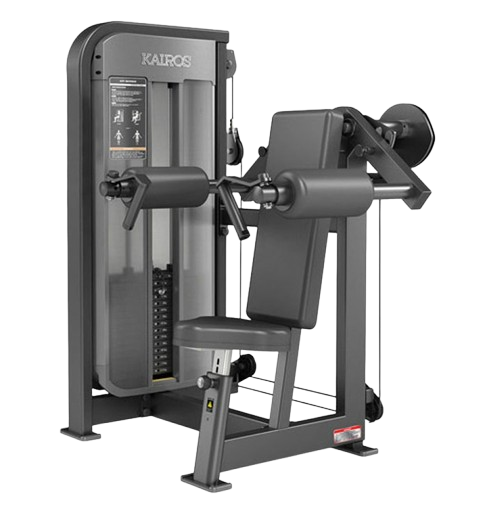

사이드 레터럴 레이즈
- 의자에 앉아 등을 등받이에 편안하게 기댄다. 양손은 핸들을 잡거나, 필요하다면 자유롭게 두고, 팔꿈치를 패드에 고정시킨다.
- 팔꿈치를 패드에 대고, 양팔을 천천히 옆으로 들어 올린다. 이때 팔꿈치가 약간 굽혀진 상태로 유지되어야 하며, 어깨와 팔이 수평이 될 때까지 들어 올린다.
- 어깨 높이까지 올린 후 어깨 근육을 수축시킨 상태에서 1~2초간 유지한다.
- 이때 호흡은 뱉는다.
- 천천히 팔을 내려 시작 자세로 돌아온다. 근육의 긴장을 유지하면서 천천히 내리는 것이 중요하다.
- 이때 호흡은 마신다.
주의사항
- 어깨 높이까지 올릴 때 팔꿈치가 너무 구부러지거나 펴지지 않도록 주의한다.
- 지나치게 무거운 중량은 잘못된 자세를 유발할 수 있어 부상의 원인이 된다.
운동부위 및 효과
- 측면 삼각근, 승모근
- 측면 삼각근을 강화하여 어깨를 넓고 둥글게 만든다.